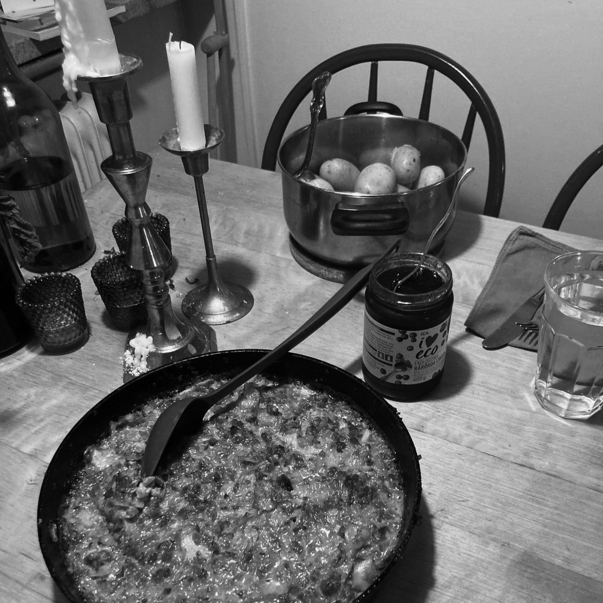
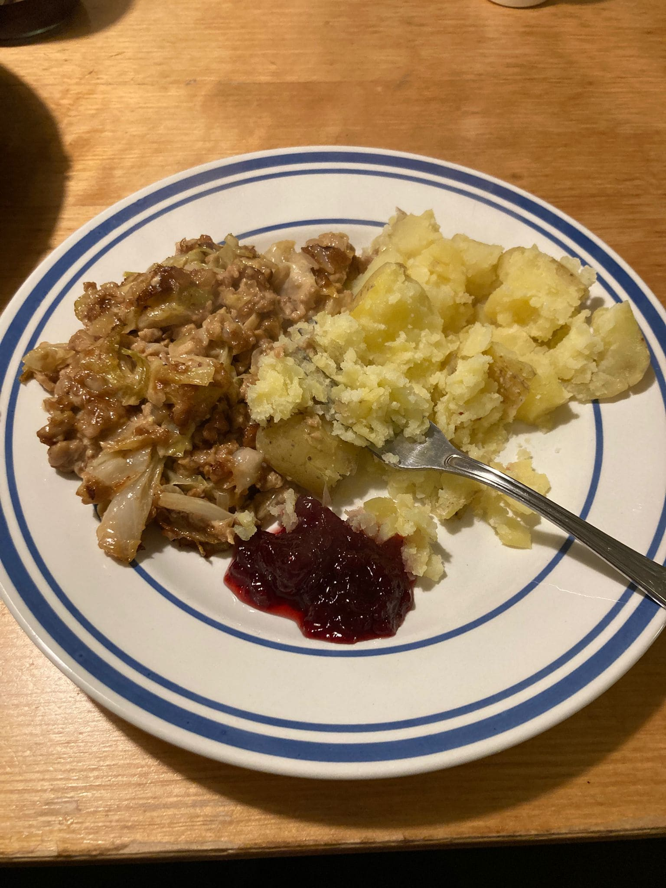

Hier sammle ich Rezepte, die so gut waren, dass ich sie auf keinen Fall vergessen will, auch wenn wahrscheinlich ein Jahr vergeht, bis ich es wirklich schaffe sie nochmal zu kochen, weil längst die nächste ofengeröstete Birne meine Aufmerksamkeit an sich gerissen hat.


Ist kein Pudding, aber ja das Rezept beinhaltet Kohl. Spitzkohl den ich zuletzt nur in seiner übertrieben populär gewordenen, meist veganen, easy Ofen-Variation konsumiert habe. Klassisch unvegan ist er aber leider mindestens so unwiderstehlich. Tusen tack an Myra für das Rezept.
Genaue Maßangaben kann ich leider nicht machen, aber das Rezept lässt einigen Spielraum für Abweichungen.
- Zwiebel
- Knoblauch
- Butter
- (Veganes) Hackfleisch
- Spitzkohl (ein halber reicht vermutlich, geht auch mit Weißkohl)
- Vegetarische Gemüsebrühe
- Creme fraiche
- Sahne
- Sojasoße
- Maisstärke
- Preiselbeermarmelade
- Petersilie
- Kartoffeln (als Beilage, anderes funktioniert sicher auch)
Erst das vegetarische Hackfleisch (wir hatten eine TK-Variante) in Öl in einer ofenfesten Pfanne anbraten zum Auftauen. In einer Schüssel aufbewahren und in der gleichen Pfanne in Öl und oder etwas Butter klein gehakten Knoblauch und Zwiebel anbraten, nach ein paar Minuten den kleingeschnittenen Spitzkohl dazugeben und solange anbraten bis er weich geworden ist. Etwas Crème fraiche, Sahne und Gemüsebrühe dazugeben und mit etwas Sojasoße, Salz, Pfeffer und etwas Honig abschmecken. Zum Abbinden noch etwas Maisstärke dazugeben, alles gut verrühren und für ca 20-30m in den Ofen stellen. In der Zwischenzeit Kartoffeln kochen. Wenn die Kartoffeln gut sind, die Pfanne aus dem Ofen holen, der Inhalt sollte nun etwas fest sein, etwa so wie ein Auflauf, wenn nicht war es vermutlich zu wenig Maisstärke. Alles anrichten zusammen mit Preiselbeermarmelade und eingelegten Gurken (idealerweise eingelegten Gurkenscheiben).
Für genaue Mengenangaben, könnte man ins schwedische Rezept schauen: https://www.koket.se/vegetarisk-kalpudding-med-potatis